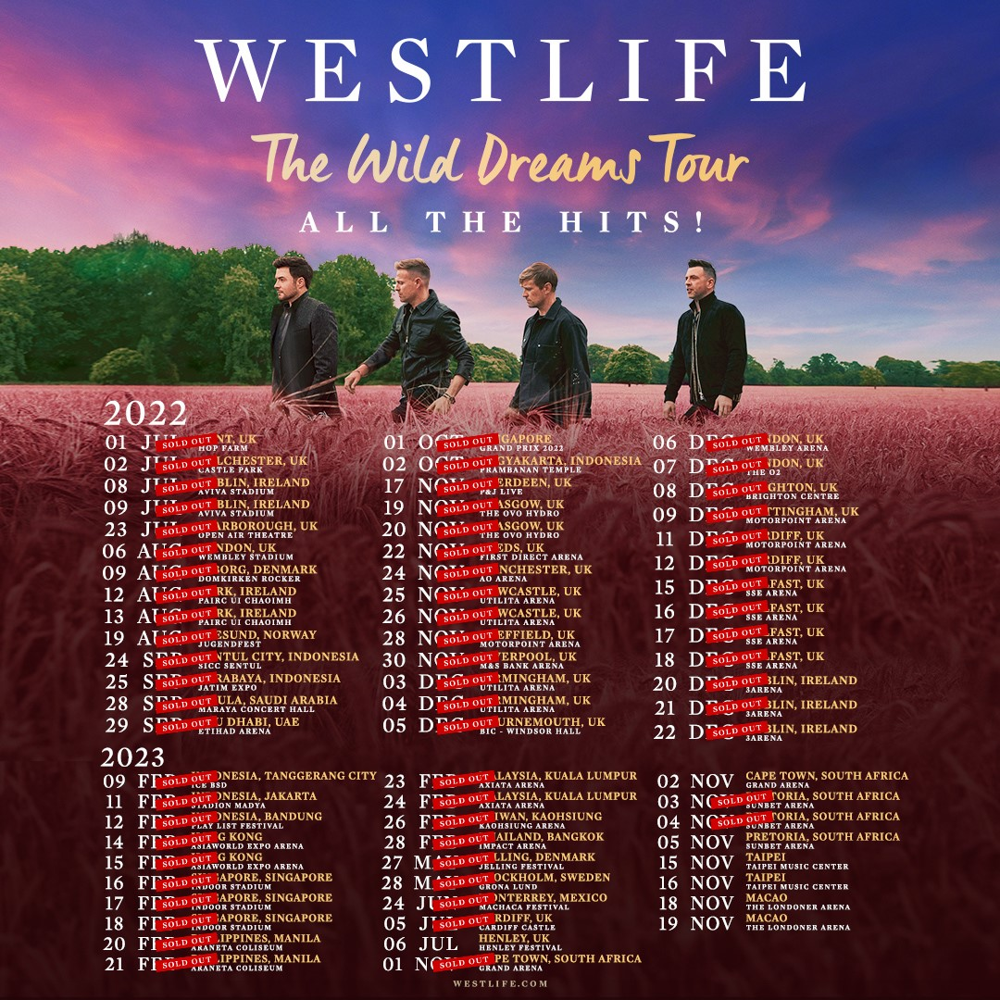

- Home
- About Westlife
- Top Albums
- World Tours
- Westlife Music
- Sign Up

Favorite Westlife Songs
- The Dance
- Queen Of My Heart
- Grow Old With You
- Beautiful In White
- Puzzle Of My Heart
Welcome To Westlife Music For The Soul FanPage
About Westlife
Westlife are an Irish pop group formed in Dublin, Ireland in 1998.
The group consists of members Shane Filan, Mark Feehily, Kian Egan,
and Nicky Byrne. Brian McFadden was a member before leaving in 2004.
The group disbanded in 2012 after 14 years and later reunited in 2018
